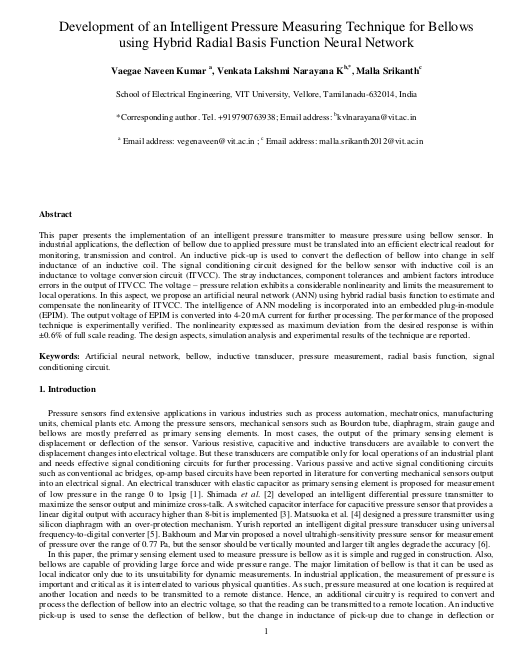
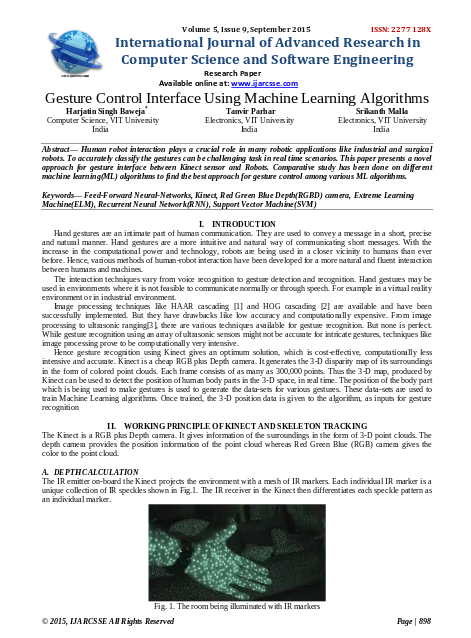

Development of an Intelligent Pressure Measuring Technique using Radial Basis Neural Network
Naveen Kumar Vaegae, Venkata Lakshmi Narayana,
Srikanth Malla
Elsevier Sensors and Transducers Physical A

Gesture Control Interface Using Machine Learning Algorithms
Harjatin Singh Baweja, Tanvir Parhar,
Srikanth Malla
IJARCSSE
/Volume 5/Issue-9/ September 2015/ISSN: 2277 128X